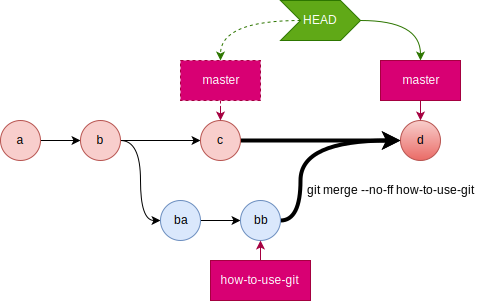
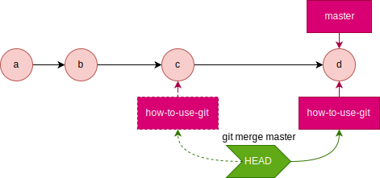
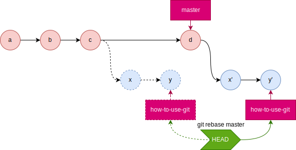
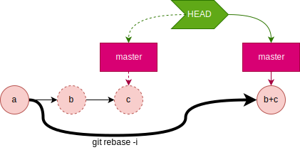

目的
Gitを端末上で使用するため、操作とそのコマンドを記す。
操作の種類一覧
- 情報更新/情報表示
- リモートリポジトリの情報をローカルリポジトリに反映する(フェッチ)
- ローカルブランチ&リモートブランチを一覧表示
- 現在のブランチ状態を表示
- コミットログを表示
- リポジトリ操作
- リポジトリを新規作成する
- リモートリポジトリからローカルリポジトリをクローンする
- リモートリポジトリをローカルリポジトリに関連付ける
- 現在のローカルリポジトリのブランチを
push - リモートリポジトリのブランチを
pull - ブランチ操作
- ローカルブランチを作成/削除する
- ローカルブランチを切り替える(
checkoutする) - ローカルブランチに対応するリモート追跡ブランチを確認する
- 既存のリモートブランチに対応するローカルブランチを作成する
- ローカルブランチを作成し、リモートブランチを対応付けて作成する
- 現在のブランチに、指定コミットの指定ファイルを展開する
- 指定したブランチを現在のブランチにマージ
- マージ時のコンフリクトを解消する
- コミット履歴を改竄する(
rebase) - ファイル操作
- ファイルをステージングする
- ステージング済みのファイルをリポジトリへコミット
- 直前のコミットを修正
- 変更をリセット
- ファイル内容確認(
grep) - ファイルを移動する/ファイルを削除する/ファイルをリネームする
- 差分(
diff)確認 - 様々な差分(
diff)を確認 - 問題を特定する
- 二分探索で問題を特定する
情報更新/情報表示
リモートリポジトリの情報をローカルリポジトリに反映する(フェッチ)
NOTE: fetchが実際にやっているのは、リモート追跡ブランチの作成。
# シンタックス
$ git fetch [リポジトリ略称 ブランチ名]
# 例:リモートブランチhow-to-use-gitのリモート追跡ブランチを作成
$ git fetch origin how-to-use-git
From github.com:otaon/web
* branch how-to-use-git -> FETCH_HEAD
[ブランチ名]作成対象となるリモート追跡ブランチ。省略すると全てのリモート追跡ブランチを作成する。
ローカルブランチ&リモートブランチを一覧表示
# シンタックス
$ git branch [-a|-r|--merged|--no-merged] [--color|--no-color]
# 例:ローカルとリモートのブランチを全て一覧表示
$ git branch -a
how-to-make-web-page-with-hugo
* how-to-use-git
how-to-use-mermaid-in-hugo
master
migrate-from-gist-to-githubio
remotes/origin/gh-pages
remotes/origin/how-to-make-web-page-with-hugo
remotes/origin/how-to-use-git
remotes/origin/how-to-use-mermaid-in-hugo
remotes/origin/master
remotes/origin/migrate-from-gist-to-githubio
[-a]ローカルとリモートの全てのブランチ情報表示。省略した場合はローカルのみ。[-r]リモートの全てのブランチ情報表示。[-merged]HEADにマージ済みのブランチ情報表示。[-no-merged]HEADにマージされていないブランチ情報表示。[-color]ブランチ情報に色を付けて表示。[-no-color]ブランチ情報に色を付けずに表示。
現在のブランチ状態を表示
現在いるブランチ、そのupstream、ファイルのステージング状況を表示する。
# シンタックス
$ git status
# 例:現在のブランチ状態を表示
$ git status
On branch how-to-use-git
Your branch is up to date with 'origin/how-to-use-git'.
Changes not staged for commit:
(use "git add <file>..." to update what will be committed)
(use "git checkout -- <file>..." to discard changes in working directory)
modified: content/ja-jp/posts/0027_how_to_use_git/index.md
no changes added to commit (use "git add" and/or "git commit -a")
コミットログを表示
# シンタックス
$ git log [--pretty=short] [--graph] [-数字] [-p|-u|--patch 対象ファイルパス*] [--decorate]
# 例:コミットログ直近2件分をグラフ形式で表示
$ git log -2 --graph
* commit d37e53c8f12bfba66c1bd1accce89ca6bcbc33a0 (HEAD -> how-to-use-git, origin/how-to-use-git)
| Author: otaon <******@github.com>
| Date: Tue Mar 12 03:24:19 2019 +0900
|
| feature: add figure of `merge`
|
* commit de2baba4ddb3f7469aba02f88190a790523312cd
| Author: otaon <******@github.com>
| Date: Mon Mar 11 02:28:11 2019 +0900
|
| feature: edit an article
[--pretty=short]表示メッセージを短くする。[--graph]ブランチをグラフ表示する。[-数字]指定した通じの数だけログを表示する。[-p|-u|--patch 対象ファイルパス*]指定ファイルの差分をパッチ形式で表示する。[--decorate]現在のHEAD、ブランチ名、タグ名を表示する。
リポジトリ操作
リポジトリを新規作成する
# -*- ローカルリポジトリを作成する -*-
# シンタックス
$ git init [ディレクトリ]
# 例:ローカルリポジトリwebを作成する
$ git init web
# -*- リモートリポジトリを作成する -*-
# シンタックス
$ git init --bare --shared [ディレクトリ]
# 例:リモートリポジトリwebを作成する
$ git init --bare --shared web
[ディレクトリ]指定したディレクトリに.gitというサブディレクトリが作成される。省略時はカレントディレクトリ。--bare最小限のリポジトリを作成する。もし環境変数GIT_DIRが設定されていなければ、現在のワーキング・ディレクトリが設定される。1--sharedGitリポジトリが複数のユーザで共有されることを指定する。このオプションは、同じグループに属するユーザがそのリポジトリにpushすることを許可する。
リモートリポジトリからローカルリポジトリをクローンする
既にリモートリポジトリが存在する時、それを元にローカルリポジトリをクローンする。
# シンタックス
$ git clone リモートリポジトリ名 [ディレクトリ]
# 例:リモートリポジトリgit@github.com:otaon/web.gitをローカルリポジトリwebとしてクローンする
$ git clone git@github.com:otaon/web.git web
[ディレクトリ]指定したディレクトリを作成してリモートリポジトリ内のデータを置く。
省略した場合はリモートリポジトリ名のディレクトリを作成してリモートリポジトリ内のデータを置く。
リモートリポジトリをローカルリポジトリに関連付ける
既にローカルリポジトリとリモートリポジトリが存在する時、それをリモートリポジトリに関連付ける。
# シンタックス
$ git remote add リモートリポジトリの略称 リモートリポジトリのURL
# 例:リモートリポジトリgit@github.com:otaon/web.gitを略称originとしてローカルリポジトリwebに関連付ける
$ git remote add origin git@github.com:otaon/web.git
現在のローカルリポジトリのブランチをpush
# シンタックス
$ git push [-u|--set-upstream] リモートリポジトリの略称 ブランチ名
# 例:現在のHEADをoriginのhow-to-use-gitブランチにpush
$ git push origin how-to-use-git
[-u|--set-upstream]ローカルリポジトリ/現在ブランチのupstreamをリモートリポジトリの略称/ブランチ名に設定する。
こうすると、次回からはgit pushでupstreamにpushできるようになる。
リモートリポジトリのブランチをpull
# シンタックス
$ git pull リモートリポジトリの略称 ブランチ名
# 例:originのhow-to-use-gitを、対応するローカルブランチにpull
$ git pull origin how-to-use-git
ブランチ操作
ローカルブランチを作成/削除/名称変更/リモート追跡ブランチ変更する
ローカルブランチを作成する
ローカルブランチを作成する。
リモート追跡ブランチが作成されている場合は、それを元にローカルブランチを作成する。
# シンタックス
## ブランチ作成
$ git branch ブランチ名 [リモート追跡ブランチ名]
# 例:ローカルブランチhow-to-use-gitを作成する
$ git branch how-to-use-git
# 例:ローカルブランチhow-to-use-gitをorigin/how-to-use-gitに関連付けて作成する
$ git branch how-to-use-git origin/how-to-use-git
ローカルブランチを削除する
## ブランチ作成
$ git branch (-d|-D) ブランチ名 [リモート追跡ブランチ名]
ローカルブランチ名を変更する
## ブランチ名変更
$ git branch -m [古いブランチ名] 新しいブランチ名
リモート追跡ブランチを設定する
## リモート追跡ブランチを設定
$ git branch -u 追跡対象のリモートブランチ名 [ローカルブランチ名]
リモート追跡ブランチの設定を解除する
## リモート追跡ブランチの設定を解除
$ git branch --unset-upstream [ローカルブランチ名]
ローカルブランチを切り替える(checkoutする)
# シンタックス
$ git checkout [-b] [-f] ブランチ名
# 例:ローカルブランチをチェックアウトする
$ git checkout master # masterをチェックアウト(作成はしない)
$ git checkout -b how-to-use-git # hot-to-use-gitブランチを作成してチェックアウト
[-b]リモートに対応付けてブランチを作成&チェックアウト。
NOTE:-bはgit branch ブランチ名; git checkout ブランチ名のショートハンド。[-f]作業ブランチやステージに変更があった場合でも、それを強制的に破棄してチェックアウトする。
ローカルブランチに対応するリモート追跡ブランチを確認する
$ git branch -vv
既存のリモートブランチに対応するローカルブランチを作成する
リモートブランチは直接チェックアウトできない。
そこで、リモートブランチに対応するリモート追跡ブランチを作成し、それからローカルブランチをチェックアウトする。
リモート追跡ブランチが存在する場合、そのブランチ名をチェックアウトすると、下記が自動的に行われる。
git checkout リモート追跡ブランチ名で、ローカルブランチが自動的に作成される。- 作成されたローカルブランチのupstreamブランチに、リモートブランチが自動的に設定される。
- この方法は効率が悪い。
git pull origin how-to-use-git && git checkout how-to-use-gitとして、
リモート追跡ブランチ作成、ローカルブランチ更新を同時に行った方が効率が良い。
# 例:リモートで作られたブランチを、ローカルにチェックアウトする
# 1.特定のリモート追跡ブランチを作成
$ git fetch origin how-to-use-git
# 2.ローカルブランチをチェックアウトする
$ git checkout how-to-use-git
## NOTE:ローカルブランチは自動的に作成される
ローカルブランチを作成し、リモートブランチを対応付けて作成する
ローカルブランチ file-system を作成する。
git branch file-system
ローカルブランチに対応するリモートブランチを作成する。
git push -u origin file-system
現在のブランチに、指定コミットの指定ファイルを展開する
# シンタックス
$ git checkout [コミットSHA] ファイルパス
# 例:コミットafpj73zのindex.htmlを現在のブランチに展開する
$ git checkout afpj73z index.html
[コミットSHA]展開対象のファイルがあるコミット。省略時は現在のindexのコミットを指す。
指定したブランチを現在のブランチにマージ
# シンタックス
$ git merge [--no-ff] ブランチ名
# 例:how-to-use-gitブランチを現在のブランチにマージ
$ git merge --no-ff how-to-use-git
マージ時のコンフリクトを解消する
コンフリクト時のファイル表記の意味
\<<<<<<< HEAD
AAAA
=======
BBBB
\>>>>>>> master
HEADでは’AAAA’に変更しているが、masterでは’BBBB’に変更している。
片方のコミット内容を全て採用する
# HEAD側を優先する
$ git checkout --ours how-to-use-git.md
# HEADと反対側を優先する
$ git checkout --theirs how-to-use-git.md
NOTE indexが変化するのはカレントブランチであり、引数で指定したindexは一切変化しない事を覚えておくこと。
つまり、merge実行時のカレントブランチは常に「変更を取り込む側」となる。
-
masterブランチにいるときにgit merge --no-ff- featureブランチでの開発が完了してmasterブランチにマージしたい場合などに用いる。
- 
-
how-to-use-gitブランチにいるときにgit merge [--ff] master- featureブランチを作成したまま放置していたらmasterが進んでしまった場合などに用いる。
- 
コミット履歴を改竄する(rebase)
ブランチの開始地点を変更する
ブランチ元にコミットが発生した時、それに追従するために、ブランチの開始地点を、ブランチ元の新しいHEADに変更する。
# シンタックス
$ git rebase [ブランチ元] [現在のブランチ]
# 例:how-to-use-gitブランチの付け根(base)をmasterのHEADの位置にrebaseする
$ git rebase master how-to-use-git

複数のコミットを一つにまとめる
複数のコミットをまとめた、新しいコミットを作る。(つまりSHAが変わることに注意)
# シンタックス
$ git rebase -i 改竄対象の直前のコミット
# 例:現在のブランチの直近2件を1件にまとめ上げる。SHAは変わってしまう。
$ git rebase -i HEAD~2
# エディタで、HEADを含めて2つまでのコミット履歴をpickからfixupに編集する
### 編集前 ###(上の方が古い)
# pick 7a34294 first commit
# pick 6fba227 second commit
### 編集後 ###(2つ目のコミットをfixupに変更)
# pick 7a34294 first commit
# fixup 6fba227 second commit

ファイル操作
ファイルをステージングする
# シンタックス
$ git add [--all|ファイル+]
# 例:index.htmlをステージングする(indexに登録する、とも言う)
$ git add index.html
--all変更が加えられたファイルと未追跡だったファイルをaddする
ステージング済みのファイルをリポジトリへコミット
# シンタックス
$ git commit [-m "コミットメッセージ"]
# 例:ステージング済みのファイルをコミットする
$ git commit -m "feature: edit index.html"
直前のコミットを修正
# シンタックス:直前のコミットを修正
## コミットメッセージも修正
$ git commit --amend # -> エディタでメッセージを修正
## コミットメッセージは修正しない
$ git --amend --no-edit
# 例:直近のコミットのメッセージだけを変更する
$ git commit --amend # -> エディタでメッセージを修正
# 例:直近のコミットだけを修正する
$ git add --all ## 何らかの修正をステージング
$ git commit --amend --no-edit ## 直前のコミットにまとめる(メッセージは変えない)
変更をリセット
# シンタックス
$ git reset [--soft|--mixed|--hard] [HEAD|HEAD^|SHA|ブランチ名]
# 例:変更をリセットする & リセットをリセットする
git reset --mixed HEAD # addを取り消す
git reset --hard ORIG_HEAD # git resetを取り消す
--softHEADの位置のみリセットする。(commitのみ取り消し)--mixed|指定なしHEADの位置とindexをリセットする。(addとcommitを取り消し)--hardHEADの位置とindexとワークツリー内容をリセットする。(ワークツリーの編集内容とaddとcommitを取り消し)
ファイル確認(grep)
$ git grep [-w] [-i] (単語|[--not] -e '正規表現' [(--and|--or [--not]) -e ...*]) [対象パス]
-e '正規表現'正規表現にマッチしたものにヒットする。'\(foo\|bar\)'でfooかbarを含む行にヒットする。[--not] ...正規表現にマッチしたものを除外する。[--and ...]複数の正規表現のandを取る。-e 'foo' --and -e 'bar'でfooとbarを含む行にヒットする。[--or ...]複数の正規表現のorを取る。-e 'foo' --or -e 'bar'でfooかbarを含む行にヒットする。[-w]単語を検索する。git grep -w userで、userのみ(つまりusersなどは除く)を検索する。[-i]大文字小文字を無視する。
ファイルを移動する/ファイルを削除する/ファイルをリネームする
gitで追跡させつつファイルを移動/リネームする
# シンタックス
$ git mv ファイル名 (移動先パス|リネーム後ファイル名)
# 例:ファイルを移動する
$ git mv how-to-use-git.md path/to/move/
gitで追跡させつつファイルを削除する
# シンタックス
$ git rm ファイル名
# 例:ファイルを削除する
$ git rm ファイル名
ファイルをgit管理下から外す
# シンタックス
$ git rm -cached ファイル名
# 例:ファイルをgit管理下から外す
$ git rm -cached how-to-use-git.md
差分(diff)確認
様々な差分(diff)を確認
# シンタックス
$ git diff
[HEAD
|HEAD^
|HEAD..リモート名/ブランチ名
|リモート名/ブランチ名..HEAD
|--cached
|変更前のSHA..変更後のSHA
|確認したいコミットのSHA^..確認したいコミットのSHA
|ブランチA..ブランチB]
[-- 対象ファイルパス+]
[その他オプション]
# 例:差分を表示する
$ git diff -U5 how-to-use-git..origin/how-to-use-git -- index.html
A..Bと書いた場合、左が古く、右が新しいとみなされる
- 比較対象の状態を指定する方法
指定なしindex(ステージ領域) → 現在のワークツリーHEAD最新コミット → 現在のワークツリーHEAD^|HEAD^..HEAD一つ前のコミット → 最新コミットHEAD..リモートリポジトリ名/ブランチ名最新コミット →指定リモートリポジトリ/指定ブランチリモート名/ブランチ名..HEAD指定リモートリポジトリ/指定ブランチ →最新コミット--cached|--staged最新コミット →index(ステージ領域)SHA1..SHA2指定コミット(SHA1) → 指定コミット(SHA2)SHA1^..SHA1指定コミット(SHA1)の一つ前 → 指定コミット(SHA1)ブランチ名A..ブランチ名BブランチA → ブランチB
- 比較対象のファイルを指定する方法
-- 対象ファイルパス+指定ファイルパスのみを対象とするgit diff -- ファイルパスA ファイルパスB指定ファイルパスAと、指定ファイルパスB
- 表示形式を指定する方法
--stat変更点ではなく、ファイル毎の変更種別と変更量のみ表示する。--name-onlyファイル名のみ表示する。git add -n .; git diff --name-onlygit add をdry-runして追加されたファイルも対象として、ファイル名のみ表示する。-U0-U10変更行の前後0行or10行を表示する。--color-words単語に色を付ける。--compaction-heuristic上方向への差分比較も実施した上で差分表示する。環境によっては使用不可の模様。
問題を特定する
二分探索で問題を特定する
1. 問題が有るコミットと問題が無いコミットの中間バージョンをチェックアウトする
# シンタックス
$ git bisect start 問題が有るコミット 問題が無いコミット
# 例:問題が有るコミット=HEAD,問題が無いコミット=v1.0
$ git bisect srart HEAD v1.0
2-A. テストスクリプトで問題混入したコミットをチェックアウトする
以下のコマンドを実行すると、gitがテスト実行と中間バージョンのチェックアウトを繰り返して、問題が混入したコミットをチェックアウトする。
$ git bisect run テストスクリプトパス
2-B. 手動でgood,badを指定して問題を混入したコミットをチェックアウトする
テストスクリプトを用いなくとも、以下のいずれかのコマンドを実行すると、badとgoodの中間バージョンがチェックアウトされる。
# 現在のコミットが問題無いことを表明する=>次の中間バージョンがチェックアウトされる
$ git bisect good
# 現在のコミットが問題有ることを表明する=>次の中間バージョンがチェックアウトされる
$ git bisect bad
xxx. 現在チェックアウトしているコミットを確認する
現在チェックアウトしているコミットを見る。デフォルトではgikで表示する。
$ git bisect view [-p]
[-p]パッチ形式でコンソールに出力する。
xxx. 二分探索の過程を確認する
git bisectのログを表示する。
$ git bisect log
xxx. git bisect実行前の状態に戻す
git bisectを実行する前の状態に戻す。
$ git bisect reset
-
.gitフォルダの場所を指す環境変数。指定されていない場合、Gitはディレクトリツリーを~または/にたどり着くまで上っていき、各ディレクトリで.gitディレクトリを探す。10.8_Gitの内側-環境変数 ↩︎